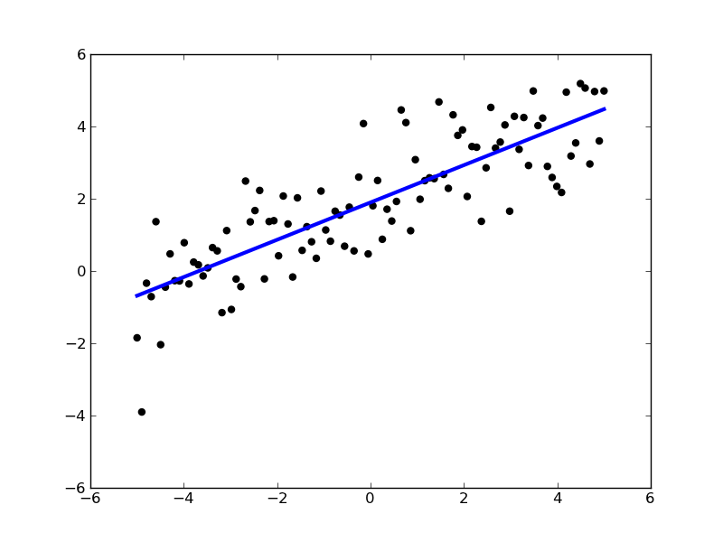

Ordinary Least Squares¶
Simple Ordinary Least Squares example, we draw the linear least squares solution for a random set of points in the plane.

Python source code: plot_ols.py
print __doc__
import numpy as np
import pylab as pl
from scikits.learn import linear_model
# this is our test set, it's just a straight line with some
# gaussian noise
xmin, xmax = -5, 5
n_samples = 100
X = [[i] for i in np.linspace(xmin, xmax, n_samples)]
Y = 2 + 0.5 * np.linspace(xmin, xmax, n_samples) \
+ np.random.randn(n_samples, 1).ravel()
# run the classifier
clf = linear_model.LinearRegression()
clf.fit(X, Y)
# and plot the result
pl.scatter(X, Y, color='black')
pl.plot(X, clf.predict(X), color='blue', linewidth=3)
pl.show()